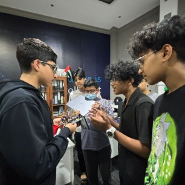

Introduce
Introduce people to FIRST so that new students and schools join.
Preseason workshop, midseason workshop, hosting a scrimmage, portfolio training workshop, People of Determination workshop.
We want to make robotics accessible in our local community and globally, reach groups that are often overlooked, and bring more students into FIRST programs.

Introduce people to FIRST so that new students and schools join.
Preseason workshop, midseason workshop, hosting a scrimmage, portfolio training workshop, People of Determination workshop.
Mentor and strengthen teams so that new teams survive and improve.
Mentoring teams locally and international teams online, team meets, creating our sister team Deadlier, and a FIRST student chapter initiative.
Spread awareness so that the public knows what FIRST is.
FIRST Ambassador volunteering, FIRST Community Award, FGC scrimmage and Nationals, FTC Fandom website, RAIL Project, FLL project integration, Scithon 3.0.
What you did and how many people you reached.
What you did and how many people you reached.
What you did and how many people you reached.